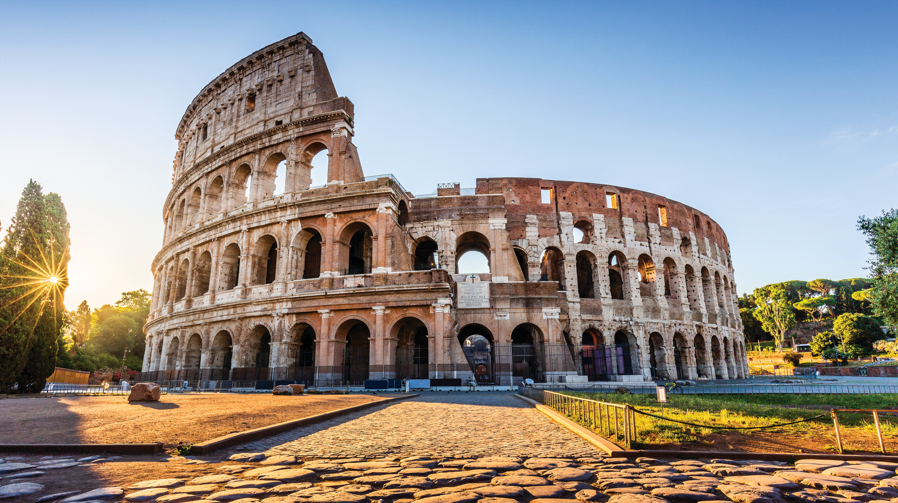
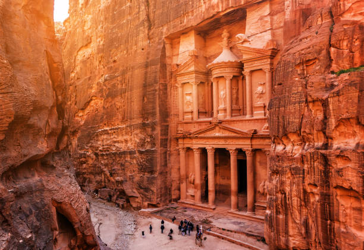
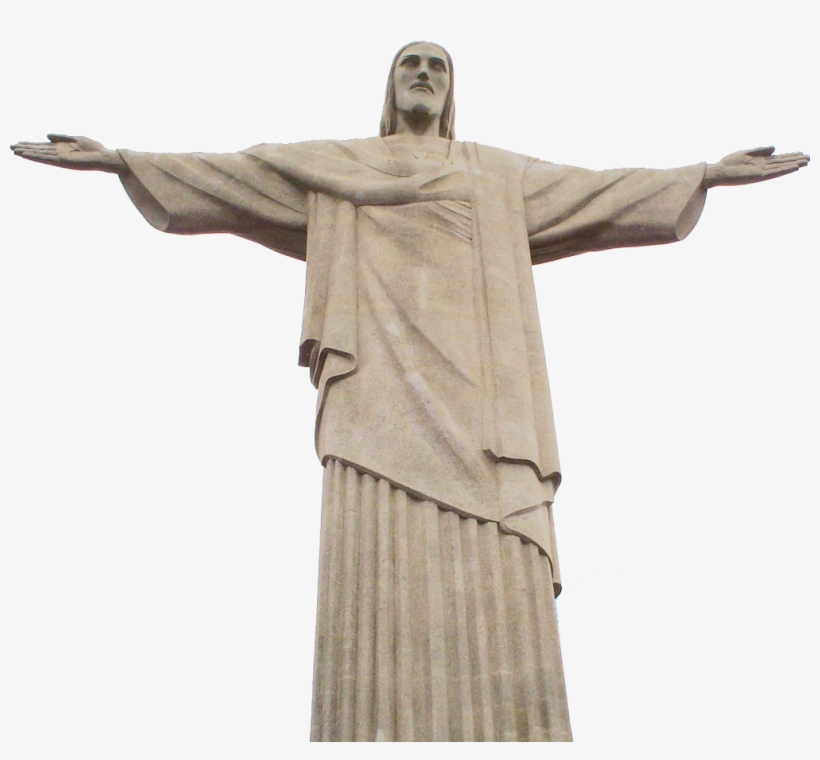

Construction of the mausoleum was essentially completed in 1643,
but work continued on other phases of the project for another 10 years.

Seven Wonders of the World
Taj Mahal
Construction of the mausoleum was essentially completed in 1643,
but work continued on other phases of the project for another 10 years.
Chichen Itza
Chichen Itza was one of the largest Maya cities and it was likely to have been one of the mythical great cities,
or Tollans, referred to in later Mesoamerican literature.

The Great Wall of China
Apart from defense, other purposes of the Great Wall have included border controls, allowing the imposition of duties on goods transported along the Silk Road,
regulation or encouragement of trade and the control of immigration and emigration.

The Colossuem
The Colosseum is an oval amphitheatre in the centre of the city of Rome, Italy, just east of the Roman Forum.

Machu Picchu
Machu Picchu is a 15th-century Inca citadel located in the Eastern Cordillera of southern Peru on a 2,430-meter (7,970 ft) mountain ridge.

The Petra
The Petra is a historic and archaeological city in southern Jordan.
It is adjacent to the mountain of Jabal Al-Madbah, in a basin surrounded by mountains forming the eastern flank of the Arabah valley running from the Dead Sea to the Gulf of Aqaba.

Christ the Redeemer
Christ the Redeemer (Portuguese: Cristo Redentor, standard Brazilian Portuguese is an Art Deco statue of Jesus Christ in Rio de Janeiro, Brazil, created by French sculptor Paul Landowski and built by Brazilian engineer Heitor da Silva Costa, in collaboration with French engineer Albert Caquot.
